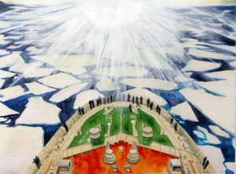

NextNew: Green Exhibition: July 7 - September 20, 2009
Artists represented in the exhibition include Michelle Blade, Colette Campbell-Jones, Misako Inaoka, Vanessa Marsh, Carson Murdach, Sandra Ono, Ryan Pierce, Rebecca Rothfus, and Michael Ryan. |
 |
The San Jose Institute of Contemporary Art (ICA) is presenting the work of nine Bay Area artists in its NextNew exhibition that features work from emerging talent on the region’s contemporary art scene. This year’s show subtitled Green, surveys fresh perspectives on climate change and related environmental and conservation issues.
Artists represented in the exhibition include Michelle Blade, Colette Campbell-Jones, Misako Inaoka, Vanessa Marsh, Carson Murdach, Sandra Ono, Ryan Pierce, Rebecca Rothfus, and Michael Ryan. NextNew: Green opens on July 7th and runs through September 20th in the ICA’s Main Gallery. An opening reception is being held on August 7th.
This year’s NextNew artists are recent graduates of regional MFA programs who reflect on “green” as source material for their ideas and work. “One of the distinguishing characteristics of this year’s show is how the artists have succeeded in marrying their conceptual goals with their chosen materials,” explains Cathy Kimball, ICA Executive Director.
On view is work in a range of mediums, including miniature sculptures of invented creatures by Misako Inaoka, and Michael Ryan’s life-size floating, breathing specters on life-support. Painters Michelle Blade’s, Carson Murdach’s and Ryan Pierce’s richly-rendered paintings depict apocalyptic dreamscapes, post-industrial landscapes, and historically-referenced seascapes devoured by urban sprawl. Digital photographic collages by Colette Campbell-Jones and mixed media pieces by Vanessa Marsh shine a spotlight on the intentional and unintentional footprints left by visitors in once remote and uninhabited natural settings.
“The big, unwieldy topic of ‘green’ encompasses everything from re-using lunch bags to halting global warming,” muses ICA Assistant Curator, Susan O’Malley. “To successfully tackle this theme we selected artists who are remarkable in part by how they personalize the topic and keenly engage the viewer by presenting curious combinations of beauty and destruction, natural and man-made materials, and classic and contemporary subject matter.”
# # #
San
Jose Institute of Contemporary Art 560 South First Street San Jose, CA 95113 tel (408) 283-8155 fax (408) 283-8157 |